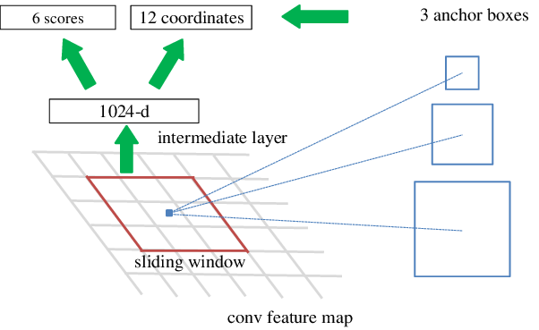

3 Methodologies
3.1 Fast R-CNN Training
Fast R-CNN follows a single-stage training process [1]. It begins by processing the image through convolutional and max pooling layers, resulting in a convolutional feature map. Each object proposal then undergoes region of interest pooling, generating fixed-length feature vectors. These feature vectors are fed through fully connected layers, leading to two output layers: one for object class probabilities and the other for real-valued object coordinates. Fast R-CNN’s training approach enables higher detection quality, updates all layers during training, and eliminates the need for disk storage for feature caching, contributing to its efficiency and accuracy [1].
3.2 Faster R-CNN Training
On the other hand, Faster R-CNN training is a two-stage process, jointly training a Region Proposal Network (RPN) and a Fast R-CNN detector [2] . In the first stage, the RPN generates region proposals by sliding a small network over the convolutional feature map, refining them, and assigning scores based on their likelihood of containing objects. These proposals serve as input for the second stage, where the convolutional feature map undergoes region of interest (RoI) pooling. This process results in fixed-length feature vectors for each proposal, which are then processed through fully connected layers to predict object class probabilities and refine object bounding box coordinates [1]. This joint training approach allows Faster R-CNN to produce high-quality region proposals and accurately classify and localize objects in images.
3.2.1 Region Proposal Network (RPN)
To produce the object proposals used during training, a Region Proposal Network (RPN) is used. The RPN takes in an image and produces a set of object proposals with an associating score. This region proposal is generated by sliding a small network over the convolutional feature map. At the center of each sliding window is a Translation-Invariant Anchor [2]. This anchor is a reference box that each proposal in that region is relative to. These anchors being translation-invariant means that regardless if the image is translated in any way the prediction of that region should not change.

Three anchor boxes are depicted within each grid, as illustrated in Figure 5. The image encompasses numerous points, equivalent to a 600 x 600 image, accommodating a 38 x 38 network overlay. The blue point within the image signifies the center of the grid. Each grid center is associated with three anchor boxes and three squares of varying sizes, representing the original anchor boxes delineated in the image [3].
3.2.2 Multi-task Loss Function
RPNs use positive and negative values to assign anchors. A positive value represents a high Intersection-over-Union overlap between the anchor and the ground truth box [2]. A negative value represents the dissociation of an anchor and a certain prediction. The higher the value, the more associated the anchor is to a certain prediction. These values are used in a multi-task loss function. This function will both train for classification and perform bounding box regression. The loss function is defined as:
\[ L = L_{cls} + λ * L_{reg} \]
Where the RPN consist of two losses.
\[ L = (1/N) * Σ[L_{cls}(p_i, p_i*) + λ * L_{reg}(t_i, t_i*)] \]
The authors describe the above equation by saying [2], “Here, i is the index of an anchor in a mini-batch and pi is the predicted probability of anchor I being an object. The ground-truth label p ∗ i is 1 if the anchor is positive, and is 0 if the anchor is negative. ti is a vector representing the 4 parameterized coordinates of the predicted bounding box, and t ∗ i is that of the ground-truth box associated with a positive anchor. The classification loss Lcls is log loss over two classes (object vs. not object). For the regression loss, we use Lreg (ti, t∗ i ) = R(ti − t ∗ i ) where R is the robust loss function (smooth L1). The term p ∗ i Lreg means the regression loss is activated only for positive anchors (p ∗ i = 1) and is disabled otherwise (p ∗ i = 0). The outputs of the cls and reg layers consist of {pi} and {ti} respectively. The two terms are normalized with Ncls and Nreg, and a balancing weight λ.”
For regression, the formula for the parameterized coordinated of the predicted bounding box:
\[ Δx = (x' - x) / w,\quad Δy = (y' - y) / h,\quad Δw = log(w' / w),\quad Δh = log(h' / h) \]
(x, y, w, h) represents the coordinates of the default anchor box,
(x’, y’, w’, h’) represents the coordinates of the predicted bounding box,
Δx, Δy, Δw, and Δh are the parameterized adjustments to the coordinates of the default anchor box to obtain the predicted bounding box coordinates.
3.2.3 Optimization
To optimize the data, backpropagation and stochastic gradient descent are utilized. Start with the initializing from a zero-mean Gaussian distribution. Perform back-propagation through RoI pooling layers and pass partial derivatives of the loss function concerning an activation input “xi” in the RoI pooling layer.
\[ {{∂L} \over {∂x_i}} = \Sigma_r \Sigma_j [i = i*(r,j)] { {∂L} \over {∂y_{rj} }} \]
The authors describe this backward function as [1], “In words, for each mini-batch RoI r and each pooling output unit yrj, the partial derivative ∂L/∂yrj is accumulated if i is the argmax selected for yrj by max pooling. In back-propagation, the partial derivatives ∂L/∂yrj are already computed by the backward function of the layer on top of the RoI pooling layer”. As iterations continue, weights and biases will be tuned towards values that optimize predictions.
This formula represents the accumulation of partial derivatives with respect to the output units of the RoI pooling layer during backpropagation. It describes how the gradients of the loss function with respect to the outputs of the RoI pooling layer are computed and accumulated during the backward pass of the neural network training process. It helps us understand how the network learns from its mistakes and improves its predictions over time.
3.3 Metrics
One data metric utilized in the chosen paper, and that will also be used in the analysis, is the mean average precision (mAP). This evaluation metric is typically used for object detection, and consists of multiple sub-metrics such as the confusion matrix, recall, precision, and the intersection over union. mAP is mathematically defined as, n is the number of classes, and APk is the average precision of the current class (k). Mean average precision basically takes an established ground truth box around the target and compares it to the detected box from the deep learning model, yielding an accuracy score. A higher accuracy score implies that the deep learning model is accurate with its detection.
\[ mAP = (1/n) * \sum_{k=1}^{k=n}(AP_k) \]
\(AP_k\) = the Average Precision of class \(k\)
\(n\) = the number of classes.